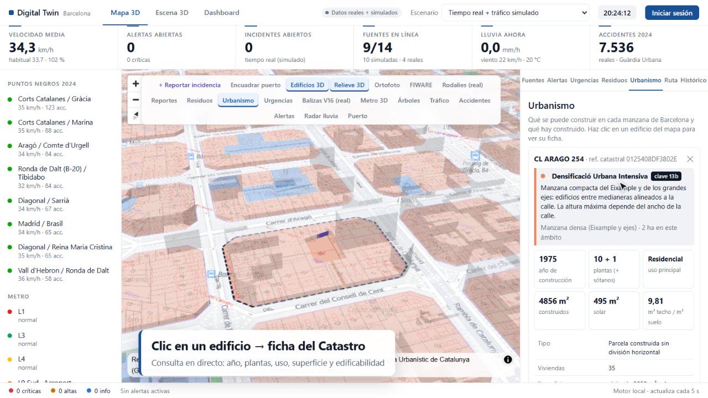
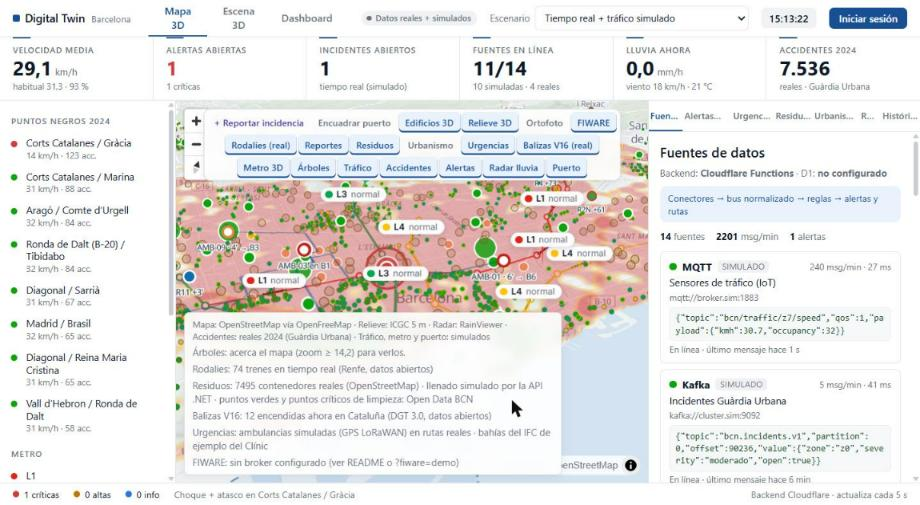
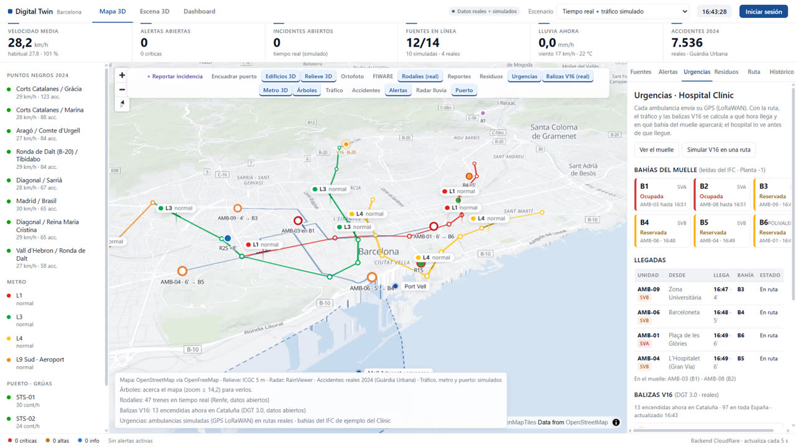
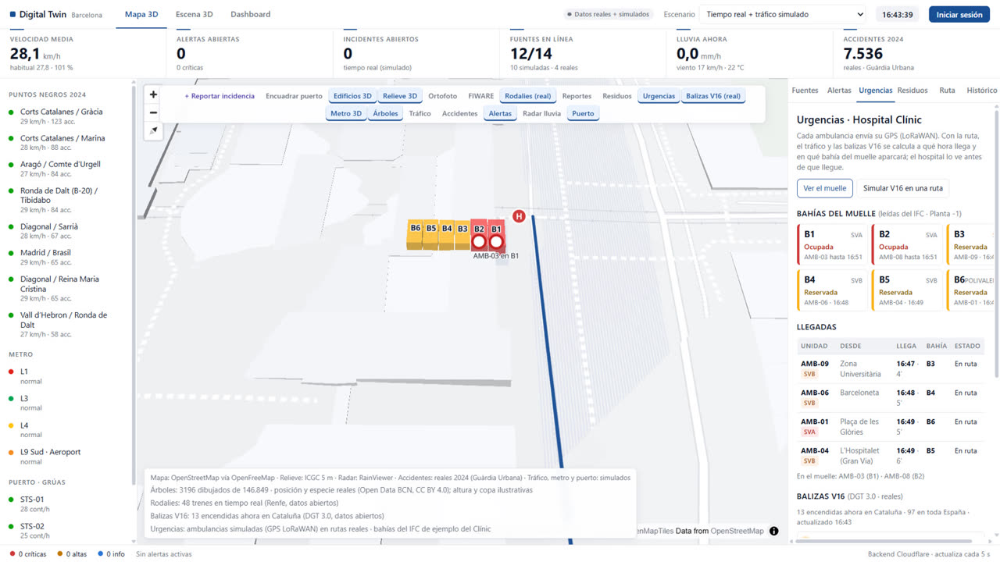
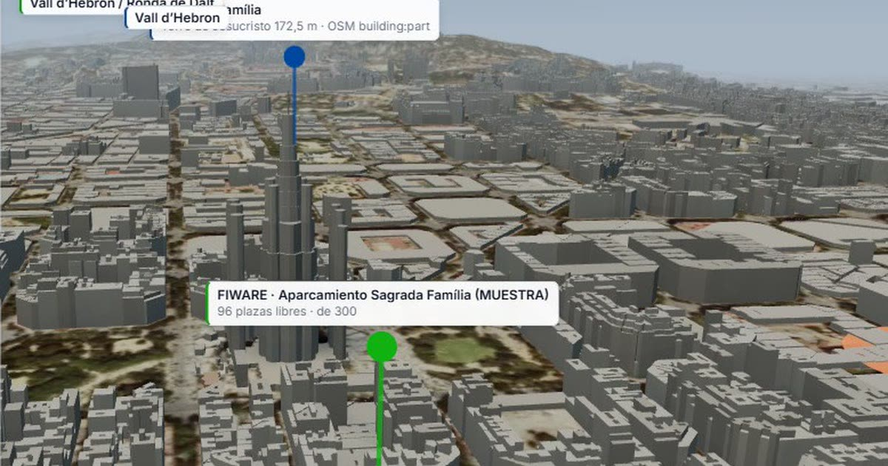

Urbanismo
Qué se puede construir en cada manzana y qué hay construido. Clic en un edificio y sale su ficha del Catastro: año, plantas, uso y edificabilidad.
GeneralitatCatastro en directo
Desarrollador full stack · Barcelona
Un mapa 3D que junta lo que pasa en la ciudad: urbanismo, urgencias, residuos, trenes y tráfico. Mezcla datos abiertos reales con sensores simulados y lo cruza todo con reglas para generar alertas.






Qué hace
Cada módulo responde a una pregunta concreta de quien gestiona Barcelona. Todos comparten el mismo mapa y los mismos datos.
Qué se puede construir en cada manzana y qué hay construido. Clic en un edificio y sale su ficha del Catastro: año, plantas, uso y edificabilidad.
Ambulancias en ruta al Clínic con su hora de llegada según el tráfico y las balizas V16, y la bahía del muelle que les toca, leída de un modelo IFC.
Llenado de cada contenedor y la ruta de recogida más corta desde la base, en varios viajes según lo que cabe en el camión. Con API propia en .NET.
Trenes de Rodalies en tiempo real, metro 3D en movimiento, tráfico por zonas y un recomendador de rutas que cambia de opinión con los datos en vivo.
Reglas que cruzan varias fuentes: choque + atasco + lluvia en la misma zona dispara una alerta crítica. Más 7.536 accidentes reales de 2024 frente a la lluvia.
Edificios reales de OpenStreetMap con relieve de 5 m y ortofoto, cargados por teselas en segundo plano, y modelos BIM del Port abiertos en el navegador.
Cómo está montado
Cambiar un sensor simulado por uno real solo obliga a tocar su conector. El resto del sistema sigue igual.
GTFS-RTTrenes de Rodalies (Renfe)DATEX IIBalizas V16 encendidas (DGT)RESTCalificación del suelo y CatastroRESTTiempo y radar de lluviaCSVAccidentes de 2024 y contenedoresMQTTSensores de tráfico por zonaKafkaIncidentes de la Guàrdia UrbanaLoRaWANGPS de ambulancias y llenado de contenedoresWebSocketTelemetría del metroPROFINETPLC de las grúas del puertoLos sensores simulados generan mensajes con la forma real de cada protocolo, pero sus valores son inventados. La web marca siempre qué dato es real y cuál no.
Tecnología
Frontend, backend y base de datos propios, desplegados en la nube y con tests que se ejecutan solos en cada cambio.
Busco mi primer puesto como desarrollador en gemelos digitales, BIM, GIS o smart city. He hecho este proyecto por mi cuenta para aprender a construir uno de principio a fin.